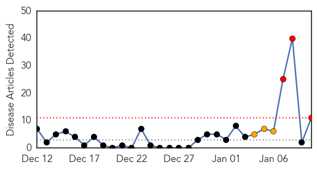

30 Day Trends
Web: 3 alerts, 3 warnings
Twitter: 0 alerts, 0 warnings
Top Articles:
- 0.986
- While recent reports of possible measles in Wayne proved unfounded, disease remains a danger
- 0.950
- Measles Are One Souvenir You Can Now Get at Disneyland
- 0.934
- 5 new measles cases reported with ties to Disneyland
- 0.901
- Disneyland Visitors Measles Outbreak Spreads
- 0.891
- 19 Measles Cases in U.S. Linked to Disney Theme Parks
- 0.879
- CARRIER OF MEASLES TRAVELED THROUGH SEA-TAC AIRPORT TO PUGET SOUND
Unvaccinated persons may have been exposed - 0.853
- Disneyland measles outbreak: Orange County case total at 8, Washington State issues warning
- 0.844
- Snohomish Times Newspaper: Measles: Person traveled through Sea-Tac Airport to Puget Sound
- 0.833
- Woman Contagious With Measles Spent 6 Hours Visiting At Everett Nursing Home
- 0.814
- Disneyland measles outbreak grows, sparks concern
- 0.661
- 19 Contract Measles While At Park Within Last Month
Top Tweets:
-
No tweets found for Jan 10, 2015
Web/News Articles
Tweets